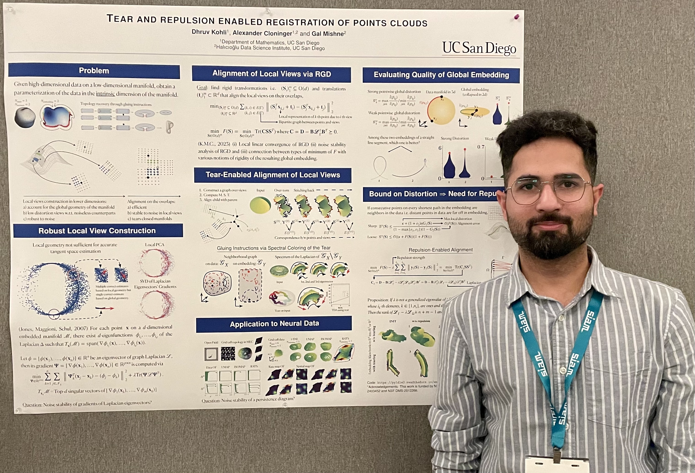

Dhruv Kohli
I am a postdoc in the Program in Applied and Computational Mathematics at Princeton University, working with Amit Singer.
I completed my PhD in mathematics with a specialization in computational science at UC San Diego in 2025, where I was fortunate to be advised by Alex Cloninger and Gal Mishne.
Contact: first.lastname@princeton.edu

SIAM MDS, Atlanta (2024)
Publications
Preprints
-
Robust tangent space estimation via Laplacian eigenvector gradient orthogonalization.
with Sawyer Robertson, Gal Mishne, Alex Cloninger.
Under review. [arXiv]- Best paper award runner-up, New Perspectives in Advancing Graph Machine Learning, NeurIPS 2025 Workshop.
-
Robust estimation of boundary using doubly stochastic scaling of Gaussian kernel.
with Jesse He, Chester Holtz, Gal Mishne, Alex Cloninger.
Preprint. [arXiv] [Code] -
RATS: Unsupervised manifold learning using low-distortion alignment of tangent spaces.
with Johannes S. Nieuwenhuis, Katja Zegwaard , Alex Cloninger, Gal Mishne, Devika Narain.
Under review. [bioRxiv] -
Tear- and repulsion-enabled registration of point clouds with global distortion bounds.
with Alex Cloninger, Gal Mishne.
Submitted. [arXiv] [Code]
Journals
-
Non-degenerate rigid alignment in a patch framework.
with Gal Mishne, Alex Cloninger.
SIAM Journal on Optimization. [arXiv] -
On a generalization of Wasserstein distance and the Beckmann problem to connection graphs.
with Sawyer Robertson, Alex Cloninger, Gal Mishne.
SIAM Journal on Scientific Computing. [arXiv] -
LDLE: Low Distortion Local Eigenmaps.
with Alex Cloninger, Gal Mishne.
Journal of Machine Learning Research, Volume 22, 2021. [arXiv] [Code] -
Asymmetric expansion preserves hyperbolic convexity.
with Jeffrey Rabin.
Journal of Geometry. [arXiv] -
Radial expansion preserves hyperbolic convexity and radial contraction preserves spherical convexity.
with Jeffrey Rabin.
Journal of Geometry. [arXiv]
Conferences
-
Learning rotation invariance in deep hierarchies using circular symmetric filters.
with B. C. Das, V. Gopalakrishnan, K. N. Iyer.
IEEE International Conference on Acoustics, Speech and Signal Processing (ICASSP) 2017.
Conferences and Presentations
| Dec 2025 | [Talk] | NeurIPS workshop on New Perspectives in Advancing Graph Machine Learning, San Diego. |
| Jan 2025 | [Talk] | IDEAS Seminar, Program in Applied and Computational Mathematics, Princeton University. |
| Oct 2024 | [Poster] | SIAM Conference on Mathematics of Data Science (SIAM MDS), Atlanta. |
| Sep 2024 | [Poster] | NSF visit, The Institute for Emerging CORE Methods in Data Science (EnCORE), UC San Diego. |
| Apr 2024 | Chaos, Computation, Analysis and Optimization (CaCAO), Scripps Institute of Oceanography, UC San Diego. | |
| Mar 2024 | [Talk] | Dagstuhl Seminar on Low-Dimensional Embeddings of High-Dimensional Data: Algorithms and Applications, Wadern, Germany. |
| Jul 2023 | Sampling Theory and Applications Conference (SAMPTA), Yale. | |
| Apr 2023 | [Talk] | Southern California Applied Mathematics Symposium (SOCAMS) at UC Irvine. |
| Mar 2023 | [Poster] | Computational and Systems Neuroscience (COSYNE), Montreal. |
| Oct 2022 | [Poster] | Fall Fourier Talks (FFT) at the Norbert Wiener Center, University of Maryland. |
| Mar 2021 | [Poster] | SoCal ML and NLP Symposium 2021 at UC San Diego. |
Links
Mindthegap: An opensource tracing software that converts bitmaps into vector graphics.
My winning solution for the Nvidia CUDA Coding Challenge India 2014.